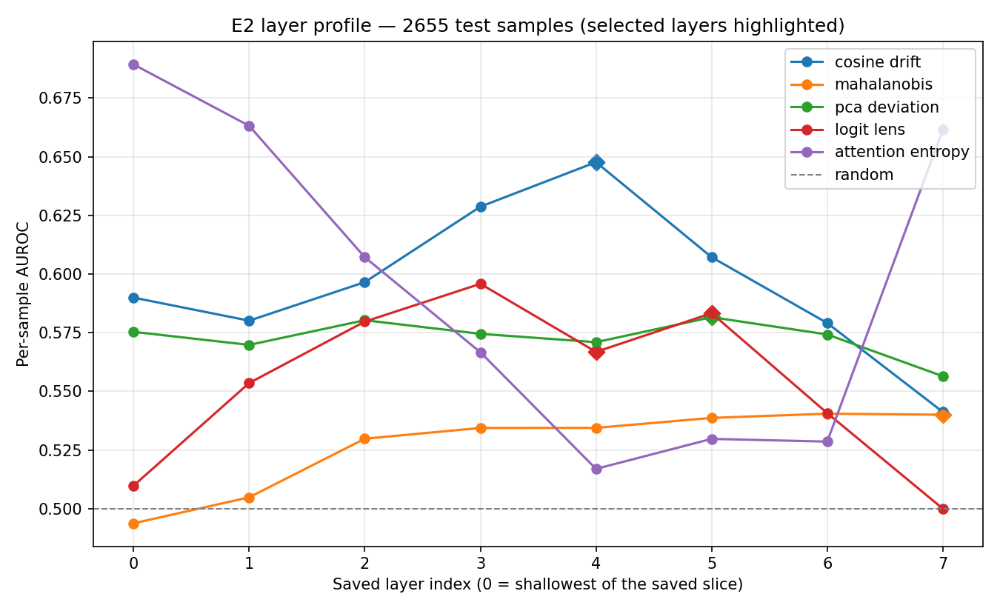
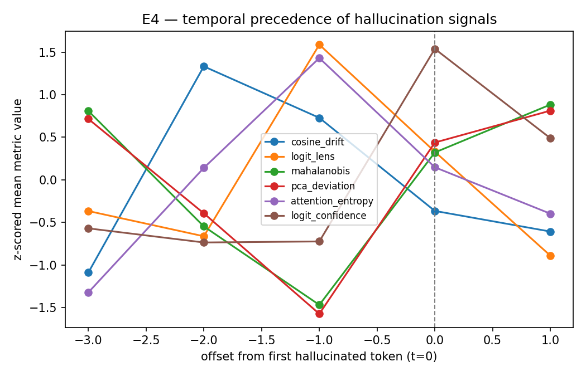
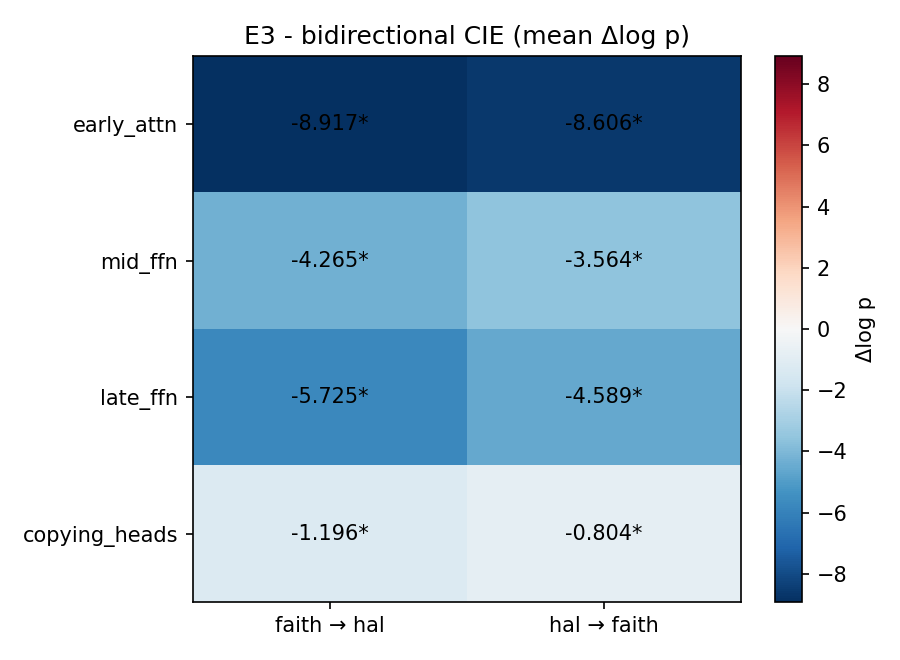
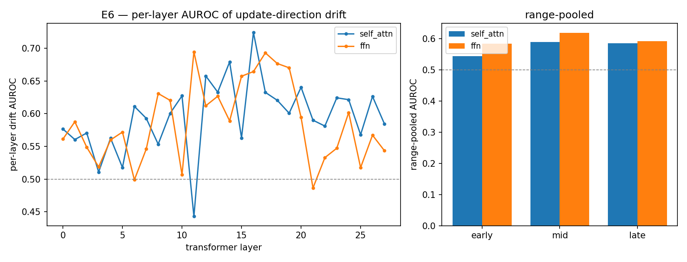
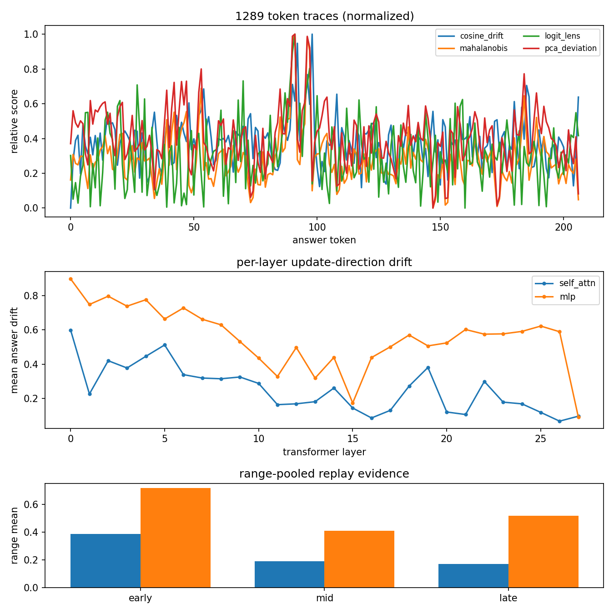
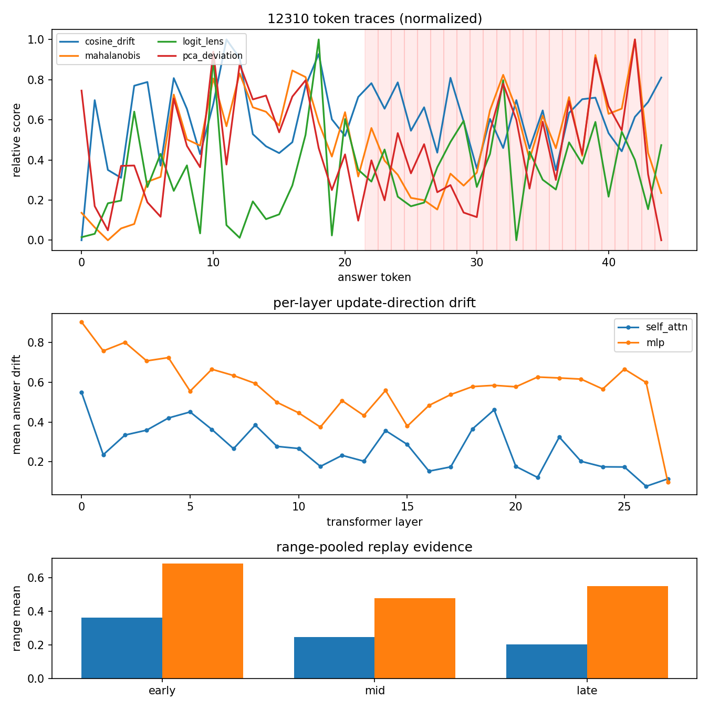
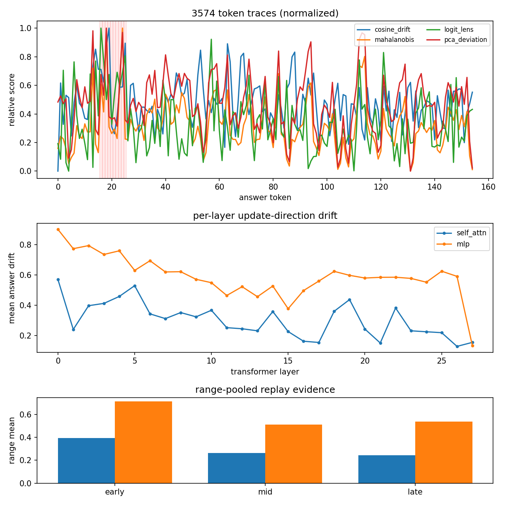

RAG systems fail loudly and fluently. This project detects that failure pre-generation — by reading five drift signals out of Qwen-2.5's hidden states while the answer is still forming, instead of judging text after the fact. Internal representation drift peaks at token t−2, two positions before the first hallucinated token is emitted.
The same prompt is run twice — once with the retrieved evidence, once with an empty context. The difference in how the model's internal state evolves is the signal. Click any block below to see its formulation, its standalone AUROC and its weight in the frozen composite.
These are real recorded runs — every number below came out of
Qwen2.5-1.5B on this repository's frozen stats.pt, exported by
scripts/export_demo_json.py. Pick a case, pick a signal, and hover any token to see all seven metrics
at that position.
1905, Olympic) are exactly the invented content — but correct
dates in grounded answers get flagged too. The sample-level composite separates the two classes only on average,
which is precisely what an AUROC of 0.65 means.
# score a supplied context + candidate answer pair python NLP-sub/scripts/live_demo.py --profile local \ --input-file NLP-sub/examples/live_demo_inputs/eiffel_tower_hallucinated_passage.json \ --show-aggregates
2,655 test responses, 38.9% hallucination rate, 1,000-iteration bootstrap confidence intervals. Switch the metric to see how the picture changes — the composite does not win on every axis, and calibration error tells a different story from ranking quality.
Aligning every hallucinated span at its first hallucinated token (t = 0) and looking backwards: cosine drift peaks at t−2 (Mann–Whitney U, p = 2.86 × 10⁻⁵). The representation has already left the faithful manifold two tokens before the model commits the error to text — which is the whole premise of pre-generation detection.
Correlation is cheap; these are interventions. Bidirectional activation patching across 50+ paired examples swaps activations between a faithful and a hallucinated run in both directions and measures the change in target-token probability. Every group below is significant at p < 0.05 — early attention dominates by an order of magnitude.
The frozen composite — same weights, same training medians and IQRs, nothing re-estimated — applied straight to HaluEval-QA. The fused score barely moves (−0.0058). Individual signals swing wildly in both directions, which is the argument for fusing them in the first place.
Produced directly by the analysis scripts in the repository. Click to enlarge.







Four sequential steps rebuild the headline table from raw model weights. Statistics are fit on train only, frozen, then applied to test.
git clone https://github.com/Chirudeva-Reddy/NLP-Proj.git && cd NLP-Proj python3 -m venv .venv && source .venv/bin/activate pip install -r Requirements.txt # place RAGTruth under dataset/ragtruth/ : # response.jsonl generated answers + character-level hallucination spans # source_info.jsonl source documents and retrieval context
# 1 · forward passes, float16 hidden-state artifacts python NLP-sub/pipeline/1-infer.py --model Qwen/Qwen2.5-1.5B --layers last18 --device auto \ --output-dir NLP-sub/outputs/artifacts # 2 · fit μ, Σ, V on TRAIN only and freeze composite weights python NLP-sub/pipeline/2-fit.py --artifacts-dir NLP-sub/outputs/artifacts \ --output NLP-sub/outputs/stats.pt --pca-components 16 # 3 · score the held-out test split with the frozen stats python NLP-sub/pipeline/3-score.py --artifacts-dir NLP-sub/outputs/artifacts \ --stats NLP-sub/outputs/stats.pt --output-dir NLP-sub/outputs/scores_test --split test # 4 · AUROC / F1 / Spearman / ECE + 1000-iteration bootstrap CIs python NLP-sub/pipeline/4-eval.py --scores-dir NLP-sub/outputs/scores_test \ --aggregate max --n-boot 1000
# E2 layer profile · E3 causal patching · E4 temporal precedence python NLP-sub/pipeline/plot.py --artifacts-dir NLP-sub/outputs/artifacts/test \ --stats NLP-sub/outputs/stats.pt --output docs/images/layer_profile.png python NLP-sub/scripts/e3_patching.py --model Qwen/Qwen2.5-1.5B --device auto --output-dir NLP-sub/outputs/e3 python NLP-sub/scripts/e4_temporal.py # E5 zero-shot HaluEval · E6 component drift · E7 failures · E8 SOTA gap python NLP-sub/scripts/e5_halueval.py --model Qwen/Qwen2.5-1.5B-Instruct --layers last18 --device auto \ --stats NLP-sub/outputs/stats.pt --qa-json dataset/halueval/qa_data.json \ --artifacts-dir NLP-sub/outputs/halueval_artifacts --scores-dir NLP-sub/outputs/halueval_scores \ --ragtruth-scores-dir NLP-sub/outputs/scores_test python NLP-sub/scripts/e6_component_drift.py --model Qwen/Qwen2.5-1.5B --device auto \ --artifacts-dir NLP-sub/outputs/artifacts/test --output-dir NLP-sub/outputs/e6 python NLP-sub/scripts/e7_failures.py --model Qwen/Qwen2.5-1.5B --device auto \ --scores-dir NLP-sub/outputs/scores_test --stats NLP-sub/outputs/stats.pt \ --e6-json NLP-sub/outputs/e6/component_drift.json --output-dir NLP-sub/outputs/e7 python NLP-sub/scripts/e8_sota_gap.py --scores-dir NLP-sub/outputs/scores_test \ --aggregate max --output-dir NLP-sub/outputs/e8
# re-scores every example under NLP-sub/examples/live_demo_inputs/ # and writes docs/site/demo_runs.json, which this page fetches cd NLP-sub python scripts/export_demo_json.py --stats outputs/stats.pt --output ../docs/site/demo_runs.json
CS F429 Natural Language Processing · BITS Pilani, Dubai Campus · supervised by Prof. Elakkiya Rajasekar · May 2026
@techreport{wadhawan2026pregen,
title = {Pre-Generation Hallucination Detection via Internal Representation Drift},
author = {Wadhawan, Sanya and Reddy, Chirudeva and Hakim, Yusra and Cijo, Joseph},
institution = {BITS Pilani, Dubai Campus},
year = {2026}, month = {May},
url = {https://github.com/Chirudeva-Reddy/NLP-Proj}
}